D_x = [1 -1] and D_y = [1 -1].T By convolving cameraman.png with D_x, we get the gradients in the x-direction. By convolving cameraman.png with D_y, we get the gradients in the y-direction.
Brief Description of the gradient magnitude computation: To compute the gradient magnitudes, we simply calculate the sums of the squares of the x-gradients and the y-gradients. Then, we take the square root of this sum for each cell. In other words, for cell (i, j) of cameraman.png, we get: Gradient_magnitude(i, j) = sqrt((cameraman * D_x)[i, j]^2 + (cameraman * D_y)[i, j]^2)
cameraman.png:
partial derivative w.r.t x:

partial derivative w.r.t y:

gradient magnitude image:
Once we have done these calculations, we can turn the gradient magnitude image into an edge image by binarizing the intensity values to 0 and 1 based on a threshold. After some experimentation, I settled on the threshold 0.36.
edge image:
In this part, I created a blurred version of the previous image (cameraman.png) by convolving it with a 2D Gaussian kernel. Then, I applied the same formula as above to obtain the edge image.
What differences do you see? The result with the Gaussian filter is less noisy and captures more detail than the original edge image. For example, many of the edges in the orignal edge picture are broken at many points, whereas the edges in this new picture are more continuous. Also, the new picture captures edges that were ignored before, including the vertical tower on the left side of the image.
Gauss-blurred cameraman:
Derivative wrt x:
Derivative wrt y:
Magnitude of Gradients:
Edge image:

Non-blurred edge image for comparison:
To reduce the number of convolutions needed, I convolved the Gaussian with D_x and D_y and then used the resulting kernel to get the gradient magnitude and edge image in one convolution. The results are shown below I used diff to verify that the result is identical to that of doing separate convolutions.
Result of convolving Gaussian with D_x:
Result of convolving Gaussian with D_y:
D_x partial derivation:
D_y partial derivation:
Gradient magnitudes:
Edge image:
Edge image from separate convolutions for comparison:
To straighten an image, I chose to rotate an image by 28 different angles and then choose the one that results in the greatest fraction of horizontal and vertical edges. This approach works well because there is a statistical preference for horizontal and vertical edges in real photographs in an environment with gravity (e.g. Earth). I did a coarse-to-fine search, first trying angles in increments of 5 degrees and then moving on to 1 degree after identifying the best 5-degree increment.
Results of straightening facade.jpg (angle found: -3 degrees): Before Rotation:

After Rotation:
Angle Histogram Before Rotation:
Angle Histogram After Rotation:

Results of straightening lukin.jpg (angle found: -7 degrees): Before Rotation:
After Rotation:
Angle Histogram Before Rotation:
Angle Histogram After Rotation:
Results of straightening jackson.jpg (angle found: 43 degrees): Before Rotation:
After Rotation:
Angle Histogram Before Rotation:
Angle Histogram After Rotation:
Note: jackson.jpg is a failure case. The algorithm does not correctly straighten this photograph because the dancers are all leaning forward at roughly the same angle, creating a large number of non-horizontal/vertical perpendicular lines.
Results of straightening birds.jpg (angle found: 8 degrees): Before Rotation:
After Rotation:
Angle Histogram Before Rotation:
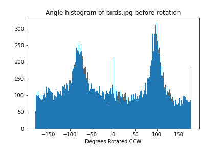
Angle Histogram After Rotation:
In this part of the project, I "sharpen" images by adding some multiple (alpha) of an image's higher frequencies back to it. This operation is done as a single convolution, derived below: Let E = unit impulse s.t. E * I = I for any image I. (=convolution) I_sharp = I + a(I - (I * G)) = IE + a(IE - (IE*G)) = I * (E + a(E - G)) Therefore, it is sufficient to convolve image I by the unsharp mask filter (E + a(E - G)).
Results of sharpening taj.jpg:
| Before Sharpening | Alpha = 0.25 | Alpha = 0.5 | Alpha = 1.0 | Alpha = 3.0 |
|---|---|---|---|---|
taj.jpg:  |
||||
| thanos.jpg: | ||||
| jedi.jpg: | ||||
| gandalf.jpg: | 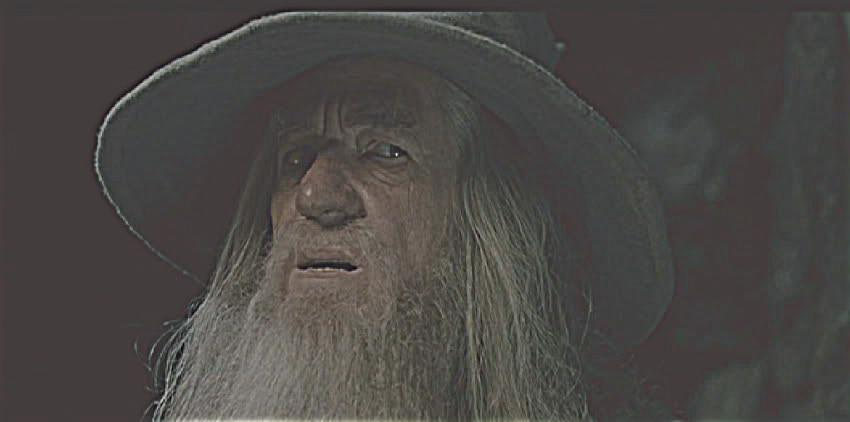 | |||
| blurred_saturn.png: |
I took the original saturn.png, blurred it, and then sharpened it with alpha=3. Here are the results: Original saturn.png:
Blurred & Sharpened saturn.png:
Compare the original and the sharpened image and report your observations. The sharpened saturn image looks much more in focus than the blurred one, but if you look closely some of the details don't quite match the original full-definition picture. For example, the fine patterns of the rings are missing in the sharpened version. So sharpening gives the appearance of more detail without actually providing more real information.
By blending the high-frequency portion of one image with the low-frequency portion of another, it is possible to create a hybrid image that appears different at different viewing distances.
One of my favorite results is this hybrid between a Boeing passenger plane and an F-35 fighter jet. Below are the original pictures, their respective low and high frequency passes, the resulting hybrid picture, and 2D fourier transforms for all of the aforementioned pictures. After some experimentation I found that a cutoff frequency between 0.001 and 0.000001 for low and high passes works well for most pictures.
| fighter.jpg | boeing.jpg | fighter.jpg high pass | boeing.jpg low pass | hybrid_fighter_boeing.jpg |
|---|---|---|---|---|
| 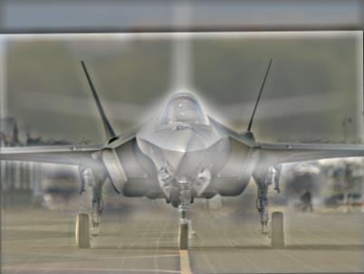 | ||||
Results of generating a hybrid between a lion and a shiba inu:
lion.jpg:

shiba.jpg:

hybrid_shiba_lion.jpg:
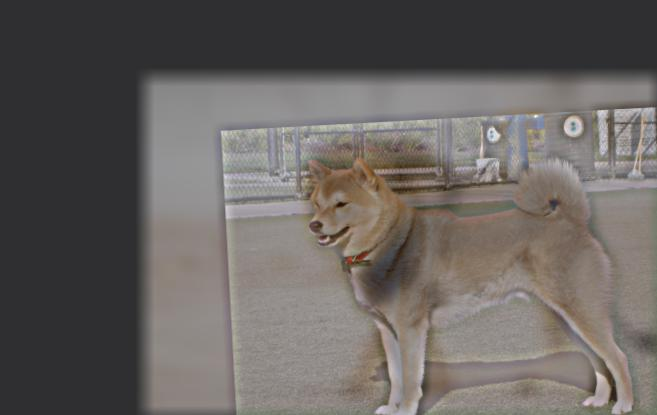
This is a failure case. The lion and shiba have different postures, so their pictures do not line up well. As a result, the hybrid effect is not very convincing.
I decided to experiment with the effects of using color on the low and high frequency parts of an image. Results of generating a hybrid between Michael Scott and a bear:
| Color Both | Color Low Frequencies | Color High Frequencies | Color Neither |
|---|---|---|---|
| 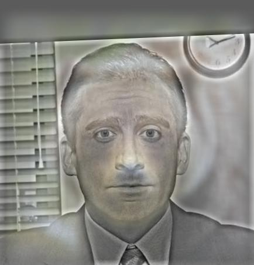 | 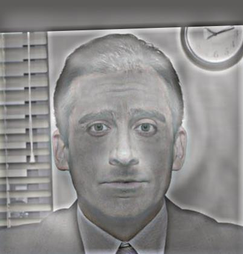 |
I found that I get the best colored results from either coloring both images, or only coloring the low-frequency image. Since the high-pass filter doesn't retain color, coloring the high frequency image seems to have little impact. Coloring the low frequencies seems to help them stand out better from afar.
Here, I implemented a Gaussian and Laplacian stack. For each layer of the Gaussian stack, I apply a successive Gaussian filter to the previous layer, starting with the original picture as the first layer. Since this is a stack and not a pyramid, I do not downsample between layers. For each layer l of the Laplacian stack, I subtract layer l + 1 of the Gaussian stack from layer l of the Gaussian stack. The last layer of the Laplacian stack is the same as the last layer of the Gaussian stack (since each Laplacian layer represents a decreasing band of frequencies).
The following are the layers of my Gaussian and Laplacian stacks for The General's Family by Octavio Ocampo. Like Dali and DaVinci's works, this painting contains information at multiple different frequency ranges.
| stack | layer 0 | layer 1 | layer 2 | layer 3 | layer 4 | layer 5 |
|---|---|---|---|---|---|---|
| Gaussian | ||||||
| Laplacian |  |
And here are the layers of my fighter-boeing hybrid image:

| stack | layer 0 | layer 1 | layer 2 | layer 3 | layer 4 | layer 5 |
|---|---|---|---|---|---|---|
| Gaussian | 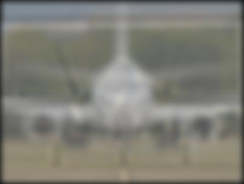 | 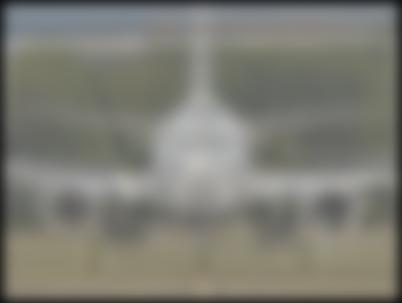 | 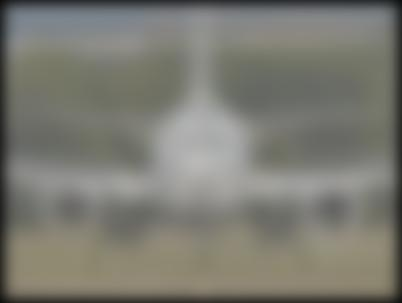 |  |
||
| Laplacian | 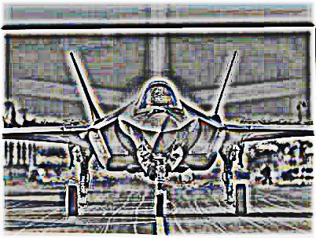 | 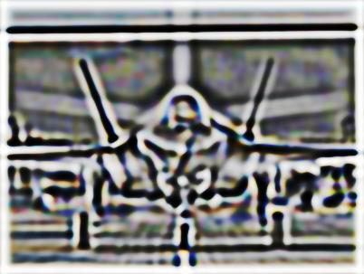 | 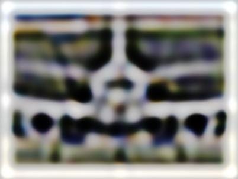 | 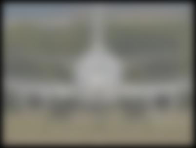 |
The goal of this part of the assignment is to blend two images seamlessly using a multi resolution blending as described in the 1983 paper by Burt and Adelson. An image spline is a smooth seam joining two image together by gently distorting them. Multiresolution blending computes a gentle seam between the two images seperately at each band of image frequencies, resulting in a much smoother seam. I decided to use the approach involving a mask, outlined in page 230 of the paper.
Here is my oraple, blended using a mask and a 10-level Laplacian stack:


Mask:

Result:
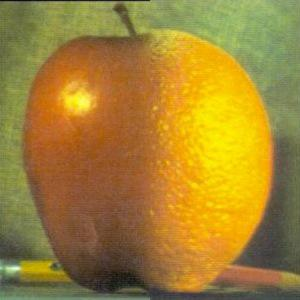
Here is a blending of Dwayne "The Rock" Johnson into the face of the Grand Canyon:
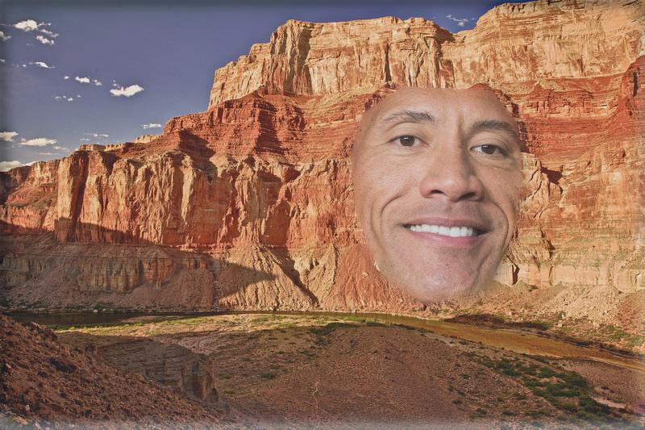
And here is a blending of arms to make the anatomy of an insect-man:

Here are the Gaussian and Laplacian Stacks for the insect-man result and its masked images:
| stack | layer 0 | layer 1 | layer 2 | layer 3 | layer 4 | layer 5 |
|---|---|---|---|---|---|---|
| Gaussian |  |
 |
||||
| Laplacian | 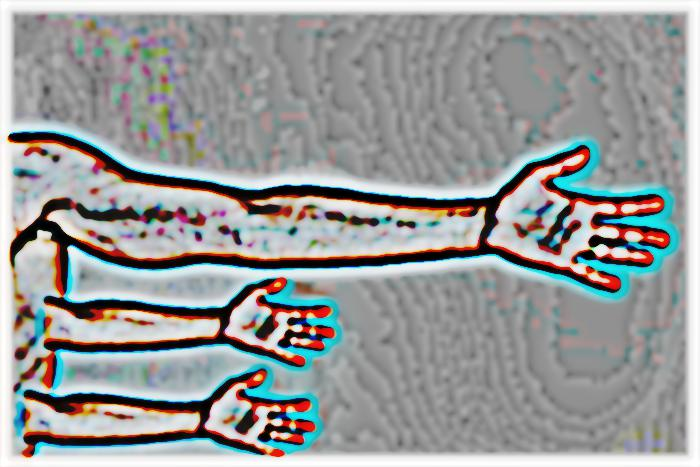 |
Here are the Gaussian and Laplacian Stacks for the insect-man result and its masked images:
| Image | layer 0 | layer 1 | layer 2 | layer 3 | layer 4 | layer 5 |
|---|---|---|---|---|---|---|
| Big Arm |  |
|||||
| Little Arms |
The coolest thing I've learned from this assignment is how useful the frequency domain is in general. In particular, I am very impressed by the fact that it is possible to (almost) seamlessly join many images simply by blending different frequency ranges separately and then adding them together. These exercises have changed the way I think about light and images.